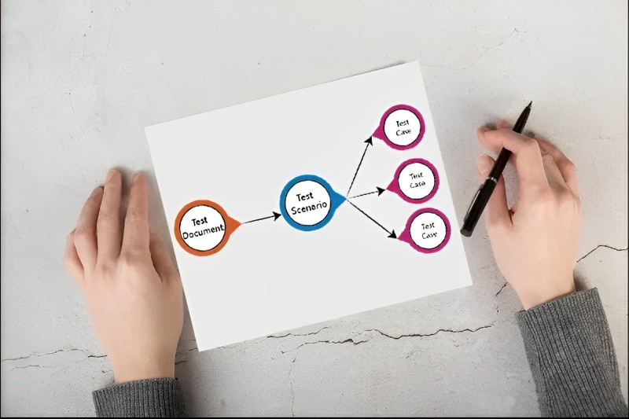
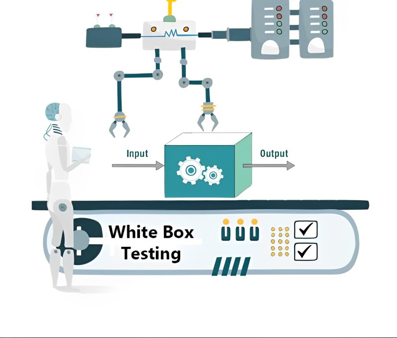
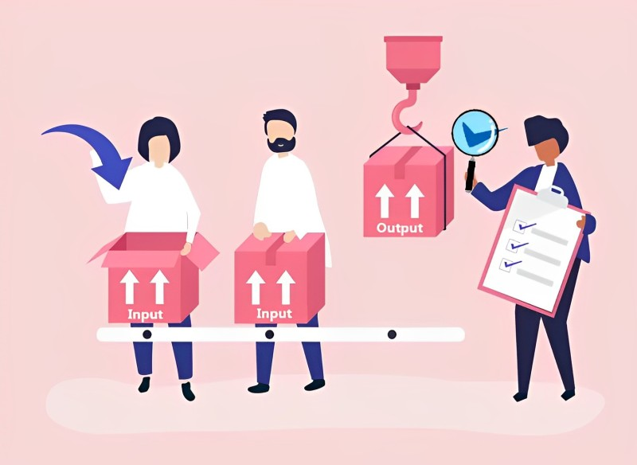
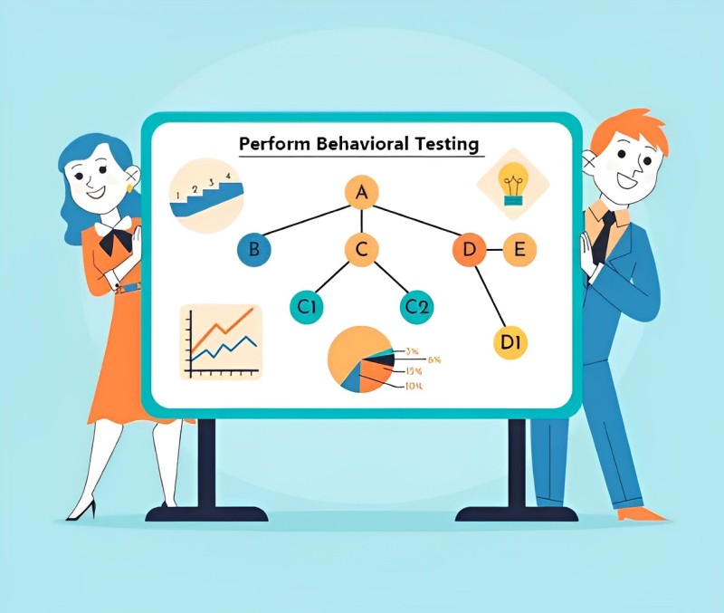

What is Software Testing?
Software testing is a process that is used to analyze the effectiveness of the system to discover whether or not the software system met the required specifications or not and detect any flaws to guarantee that the product is free from flaws to produce a good product.
First, let's take a look at the general definition, then at the many forms of testing, such as testing process and automated testing, then at the testing methodologies and techniques, and lastly at the different types of black-box testing. Testing is the process of assessing a software product or system to examine a software product or system to determine if it fulfills or fails to satisfy predefined criteria. Testing is performed in the field of software engineering (i.e., defects).
To assess the software product's dependability, security, and performance, the testing process examines its properties to determine whether or not certain criteria, such as those that are missing, have been met. Testing software entails evaluating a software program and determining its outcomes and outputs by running the program through several different use cases. This evaluation is done using a variety of methodologies and tools.
In the field of software testing services, behavior testing is one example of a method that may be used to check particular behaviors of a software program rather than the technical standpoint, and this approach can be used under a variety of different conditions. The software quality assurance specialists at Software Testing Company adhere to agile methodology and make use of organized procedures, tools, and methods. They have been providing the most comprehensive behavioral testing available.
Overview of behavioral testing
Testing an application's behavior simply refers to the process of simulating various use cases and seeing how it responds. The behavior is often communicated to us developers by our various clients. They explain the overall flow of the system, and our job is to develop the code such that it satisfies their requirements. The formalization of their requirements into tests may be aided by the use of behavioral testing. Because of this, behavior-driven growth inevitably follows (BDD).
The testing is done following the functional requirements, which include things like the anticipated behavior and the tasks that need to be completed. It verifies that the program is capable of performing its intended tasks and that nothing has been carried out improperly or omitted from the process. In addition to this, it examines non-functional requirements, which might include things like load time and other performance measurements. Furthermore, testing also involves interactive demo software, ensuring seamless user experience and functionality validation
What kind of an influence does Behavior testing have on the entire testing scenario?

1. The need to get the highest possible quality goods into the hands of customers as rapidly as possible has resulted in software companies adopting new methods, tools, and processes. As part of these new methods, incorporating tools like best Identity verification software can enhance security measures, ensuring that the right users access the software while maintaining efficiency in the development process. The use of artificial intelligence in robotics process automation (RPA) is changing the goals of businesses to attain new levels of quality, speed, and cost-effectiveness. Behavior testing can fully satisfy the testing objectives outlined in Agile and DevOps techniques. This is because test automation is still a discipline that is underused in the majority of businesses.
2. In software testing, artificial intelligence may be used to replicate the behavioral patterns of users depending on location and devices, and then utilize those simulations as inputs to develop smart test suites. In addition to this, it can do data analysis on the activities of users across social media platforms, mine faults, and promptly and reliably make intelligent judgments on test coverage and optimization of test suites.
3. The process of maintaining test cases is laborious due to the complicated structure and operations of the test cases. The maintenance of test tools is a necessary but time-consuming operation. Additionally, the maintenance and execution of automated testing tools still need some level of human involvement, which is something that may be eradicated with the use of AI automation testing. Exploratory testing may make better use of the time and effort saved by the testers, which can help the process go forward more quickly.
4. Self-healing that is predictive Changes being made to software programs are a regular feature, which often results in the breaking of UI tests when objects are not identified. Self-healing that is predictive self-healing: Not only are quality assurance professionals need to run tests, but they also need to maintain the test suites and object repositories. This is a significant obstacle for them to overcome. When there are modifications made to the software application, an AI testing framework can automatically update the test suites. Consequently, quality assurance professionals may spend less time and effort on the maintenance of test suites.
5. Visual validation: A powerful artificial intelligence testing approach that makes use of pattern and picture recognition to identify visual flaws in software applications. This is accomplished by making certain that the visual components look and perform in the manner that is anticipated. AI is capable of recognizing and analyzing dynamic user interface controls on a pixel-by-pixel basis.
6. Cloud-based virtualization: Any software package has to be tested on a multitude of devices, including their screen sizes and resolutions, operating systems and their types, browsers and their versions, and a variety of other software and hardware configurations. These factors have contributed to an increase in the complexity of test environments, which has necessitated the use of testing teams to filter and carry out UI testing. It should come as no surprise that the management of such test environments has become laborious, time-consuming, and costly. The testing that is guided by artificial intelligence may examine past test results and user data to assist teams in virtualizing particular test environments on the cloud.
Techniques used in White Box testing

Testing in a white box is an essential component that must be carried out to discover the logic or code of a program. It is also known as open-box testing, logic-driven testing, structural testing, and route-driven testing among testers. It is carried out in a predetermined sequence by seasoned software developers to cover a variety of possible methods.
Three types of analysis with best practices:
- Unit testing
- Incorporation testing
- Organization testing
Primarily investigation for testing comprises 5 steps. :
1. Identification of all components, features, and programs.
2. Flow graph with probable paths and their classification.
3. Create test cases for every path.
4. Execution of the path and repeated tests.
5. Performance metrics even include load testing services.
Coverage and convergence of trails along White Box testing
Software testing companies adopt best practices dependent on diverse paths. The below methods cover a wide variety of paths.
These performance measures are required to ensure the quality of software and to build a new software for depth evaluations and automation JUnit as well as Cucumber is essential.
Why do our engineers conduct best practices with White Box Testing?
Surety
- All self-determining ways are thoroughly investigated for fact and factual values.
- All loops are cleared at a boundary level.
- Structural validity is established within operational boundaries.
Discovery of errors
- Faulty design and implementation lead to logical errors. Certain conditions of the program cannot be controlled.
- Unless there is a logical flow, design inaccuracies are bound to create impediments.
- Testers need to detect syntax and typographical errors.
In larger systems, testing might be troublesome for path accuracy tests. That is why important paths are identified for practical purposes.
How are WBT techniques performed?

Statement Reporting
A small example brings clarification to myriad approaches. In a suitable program writing language, a ‘statement’ is a code line or instruction for the device (computer) to know and perform tasks. It is compiled and then converted to an object code. When a program runs on the device it performs necessary actions.
A ‘Statement cover is the validation to ascertain if each code line is 100% accurate.
Branch Coverage
Branch coverage is an essential aspect of software testing and plays a critical role in ensuring high-quality software. It is even known as decision coverage. Each branch is required to be validated at least one time
Path Coverage
All the paths of a program need to be tested at least once for functionality. It is more powerful and accurate than the other testing methods. It is used for evaluating and testing complex programs.
A ‘Path Coverage’ detects the errors and assists in implementing the right paths for programming.
The Advantages of Conducting Behavioral Tests
Additionally, Behavioral testing is even referred to it as Black Box testing. This method of testing is carried out oppositely compared to white box testing, in which testing may be carried out without seeing the internal program code structure. In this kind of testing, the testers are just apprehensive about the participation and productivity of the system; they do not attempt to modify the underlying structure of the software. According to this technique, the tester is expected to be familiar with the inner workings of a system as well as how the system is put into operation. According to what the name says, this kind of testing is carried out whenever the expert is unaware of the underlying arrangement of the structure or the application being tested.
1. Testing for safety is the top priority
Theft of data may have catastrophic effects, and businesses simply cannot afford to take that risk in today's hypercompetitive environment. To guarantee that applications are secure, safe, and function at a high level, the products that are currently being developed, including website unblockers, should undergo security testing using a comprehensive testing method. As a result, several dangers and holes in software might be patched up if the appropriate security testing approaches are used.
Tests conducted using behavior-driven testing often concentrate more on the actions taken by users than they do on the practical capabilities of the program being evaluated. Beyond examining a prospective employee's abilities and knowledge, behavioral evaluations look at how they interact with others. These tools highlight the applicant's potential for growth by concentrating on behavioral characteristics such as assertiveness, adaptability, leadership, logic, and self-awareness. You may use these tools to make better hiring decisions. The experience of the tester is the primary emphasis of EGT. This method does not adhere to a predetermined set of guidelines while evaluating the performance of a system.
2. Behavioral Testing helps software architecture
It is typically an indication that there is an issue with the software design if testing the code is tough. If testing the source code involves a large amount of preparation, the code may be overly intertwined with its dependencies, making it more difficult to alter in response to changing needs in the company. Code that is difficult to test and takes a long time might have performance issues. By developing code that can be tested, architectural problems may be solved before they become a technical debt that has to be solved in the future.
3. Suited at all levels
Techniques that are based on the specification are suitable for use at all levels of testing (from component testing to acceptance testing), provided that there is a specification available. For illustration, the requirements specification or the functional specification can serve as the foundation for the tests carried out during the acceptance testing or the system testing. They are designed to evaluate how you respond to pressure, the degree of your skills, and how you carry yourself in an office setting. Implementing BDD testing to improve cooperation amongst key stakeholders including developers, testers, product managers/owners, and business analysts is the primary objective of this testing strategy.
4. Simple evaluation and comments
There will be no need for anybody to have any programming skills if the test cases are written in plain language that is readable by humans. Business Analysts have the opportunity to take an active role in the process of building automated test cases, as well as to examine these instances and provide suggestions on how they might be improved. Instead of placing an excessive amount of emphasis on evaluating the technical implementation, Business Domain Testing (BDT) directs attention to the requirements as well as the business perspective. Testing for behavioral effects is also an essential part of evaluating developmental neurotoxicity.
5. Used for data
The use of behavioral testing as an essential component of toxicological studies is now widely recognized and practiced. In addition to helping make judgments on regulation and do mechanistic analyses in fundamental research, the data may also be sensitive, specific, and dependable in determining whether or not a chemical caused an impact. This is another essential kind of Software Testing Automation Services that is done to validate the system's capacity to deal with the anticipated volume of transactions. Additionally, it validates the performance of the system or application under both typical and peak load situations.
The Many Applications of Behavior Assessment Tests
The information acquired through behavioral evaluations is invaluable. Getting rid of the behavioral problem is the primary objective of these sorts of candidate evaluation tools, thus they should be designed accordingly. The fundamental goal of evaluating this kind is to get to the bottom of the behavior and correct any abnormalities that may be the source of the behavior change.
Different Forms of Behavioral Evaluation Tests
1. Developers and how they conduct themselves are two sides of the same coin. Because of this, candidate evaluation systems analyze a wide variety of different kinds of behaviors. They may be broken down into the following five categories:
2. Direct assessment is the study of behavior as it varies throughout the context in which it is being observed. The term "Situational Behavioral Assessment" is another name for it.
3. Analog assessment kind of behavioral evaluation is carried out to investigate the changes that take place under mimicked or fabricated circumstances. The baseline observations are carried out to keep track of the response frequencies by the different scenarios.
4. Assessments may be direct or indirect. An indirect assessment is one in which the behavior is not directly seen but rather inferred via the use of retrospective analysis.
5. Idiographic evaluation is a kind of behavioral analysis that describes the features of the person being evaluated.
6. Contextual assessment: The primary emphasis of this kind of evaluation is on the environmental cues or factors that are responsible for the observed shift in behavior.
When can you perform behavioral testing?
1. Black box testing, which is carried out by experts unlike conventional testing, is advantageous for assessing the uses of the software.
2. The whole operation of the system is examined.
3. The results of black box testing provide much comprehensive view of the program.
4. This kind of testing strategy examines apps from the point of view of their end users.
5. To test the program not on a module-by-module basis but somewhat as a full structure. It is applicable in software as well as any other application.
By using this testing, it is possible to evaluate and validate the whole of the software development life cycle in a very straightforward manner. It is possible to apply it to the assessment of the product at a range of levels, such as the phase of the unit, the phase of integration, the phase of acceptance, the phase of the system, and the phase of regression. The testing of behavior is not an overly complicated process to carry out. Considering this, it won't take you long to realize that you skipped testing a few key user flows that are vital to the product. You should make it your goal to test every possible combination of data kinds and flow of data that is imaginable to you. This can also be crucial in ensuring the quality and functionality of the software product development, covering all aspects from unit testing to regression testing.
Techniques used in Black box testing

When it comes to Black box testing the best approach is to work smarter, not harder. In this methodology, the software tester does not have access to the internal app. He can only test the overall functionality based on the application requirement.
It varies from White Box Testing and is also known as behavioral testing. The ideal approach for creating software that is devoid of flaws is to combine the two techniques. To tick the right boxes for Black Box testing here are the critical parameters.
Take a glimpse into how it works and the best practices that make software testing dependable.
Equivalence Class – Partitioning
The primary goal is to divide all inputs into classifications. They can be placed in order of data sets, the relationship of input values, or ranges. At the same time provides all coverage.
This technique helps the tester to locate representative sets of all classes. This enables helps to check if all the elements of the entire set give the same output. A single value from the entire set tick marks the performance. The man benefit is a time-saver for minimum testing solutions. Negative tests are also conducted to rule out defects.
Boundary Value Analysis
Involves testing of input values of a program at the edge or boundaries. Often the input values are suspected to behave unexpectedly due to special case edges. Sometimes the design is not well-equipped to handle the program’s edge cases. This approach ensures that a program behaves without any anomalies. It is also capable of picking up bugs that may be ignored or go unnoticed.
Two types of testing are done:
Inner Boundary
The spotlight is on the input values around the edges of the domain. Minimum or maximum values are checked.
Outer Boundary
Input values just outside the edges are tested. They can be slightly above or below the Minimum or maximum levels.
Domain Tests
It involves testing specific functions. If the number of tests is high then they are broken into smaller units. Each subset is tested one by one.
Orthogonal Arrays
Pairwise interactions are tested to derive statistics. Various factors are considered in this testing.
Decision Tables
It enables testers to understand if the program runs smoothly in diverse conditions. Different row combinations are created for multiple testing grounds. A software testing company will add expected outcomes to verify them. Breaking down the components gives quicker test results.
State Models
Several eCommerce sites can be subjected to this technique. On such websites, buyers make purchases, check out, and give payment and shipping information before checking out. Various state models in such a scenario could be:
- Checking out various products
- Putting them in the cart
- Examination before moving out
- Give access to shipping and payment
- Placing the order confirmation
In all activities, it is a transition for a visitor to use. All possible paths need to be tested and bugs to be removed. Along with eCommerce Testing Services, financial systems, and physical device control are subjected to this test.
Exploratory Testing
This method is used by several knowledgeable testes who have previously carried out standard evaluations and identifications. A software corporation that employs engineers often proposes that those engineers participate in exploratory testing to take advantage of their expertise and abilities. The functionality of the program, as well as its operational capabilities, are put through their paces. They can comprehend the technical flaws and put their abilities to use to enhance the functionality and perfect the program.
Three kinds of testing:
- Freestyle
- Strategy depended
- Scene type
When testing is carried out from the perspective of the user, and when a speedy review is necessary, this technique works very well.
Testing on all of the pairings
This technique tests and covers all of the possible pairwise combinations of the supplied values. Testing becomes more challenging when the inputs are high. It is superior to the old approaches, which not only take a lot of time but also have a track record of being deceptive or ineffective. This method may be used for every possible combination. Even the total number of examinations has been reduced. AllPairs, PICT, SmartBear, and the Pairwise test case generator are some of the tools that are used for it.
It is essential that you have a solid understanding of the fact that black-box testing does not entail testing that is either random or devoid of data. You must ensure that you have a thorough understanding of the system's intended behavior for any specific set of inputs before you can proceed. This indicates that you should always collaborate with the product team to design your tests. You need to be completely aware of the intended outcomes of every conceivable contact you have with the system. When a user hits the login button, what actions are expected to take place? How can you check to see whether the user interface is displaying the right information?
The user interface (UI) testing process may benefit tremendously from using black-box testing. In this section, you will concentrate on how the behavior of your system changes depending on the actions taken by an end user. Consumers have zero comprehension of what is taking place "behind the scenes" of your code. If your testers are familiar with the functionality of the code, they are more likely to consider this while testing.
Bottom Line
In conclusion, the significance of software testing may be broken down into three categories: reducing the amount of maintenance needed, boosting user morale, and better conforming to requirements. It ends up producing software of high quality, which is something that ought to be the end goal for all of us.
When using tool frameworks, it is essential to have a viewpoint on them since each tool framework takes a distinctive approach to the definition of its components. In conclusion, we are able to see that implementing behavioral testing would considerably pave the way to bring about lower degrees of abstraction of the program, therefore assuring attention to the distribution of software behavior.
FAQs:
Ans: This is also known as Black Box Testing. It does not use the internal program, design, or the way it has been executed. It is functional as well as non-functional.
A behavioral test is developed to address all communications gaps which create errors in a natural programming language. It is an agile approach encouraging developers and Q & A testers to collaborate to bridge IT gaps for enterprises.
Ans: Since the tester is unable to see ‘inside’ the methods focus on the below categories. It focuses on incorrect and missing functions, defects in the edges, performance issues, and initializing or termination problems.
Ans: Yes, it is black-box testing. Software specifications determine checks, functions, as well as automation capabilities. It is quite elaborate and shows different scenarios. The main idea is to focus on the system’s needs without implementation specifics.